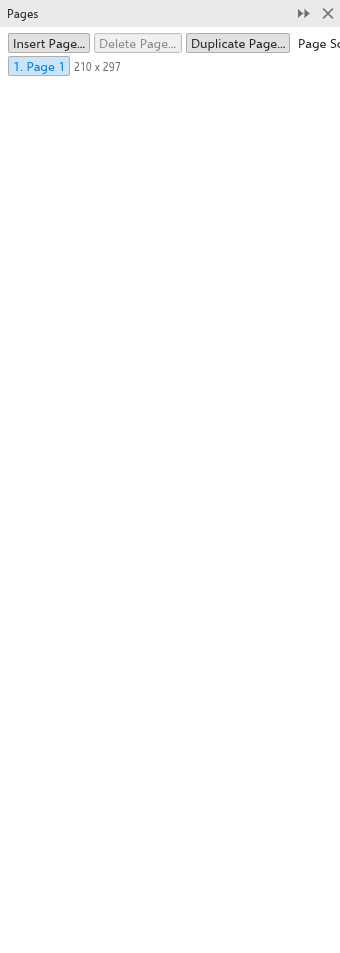
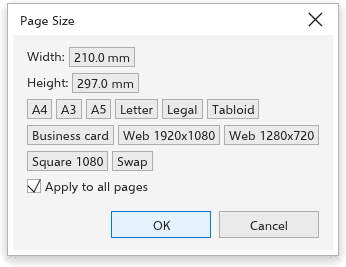

Trabalhar com páginas
Mover-se entre páginas
- Clique em uma guia de página embaixo da janela de desenho, ou use o navegador de páginas ao lado delas (primeira, anterior, próxima e última página).
- Pressione PgUp ou PgDn.
- Escolha Layout > Ir para página, digite o número da página na caixa de diálogo Ir para página e clique em OK.

O painel Páginas
O painel Páginas lista as páginas do desenho. Clique em uma página para ir até ela. Os botões Inserir página, Excluir página e Duplicar página agem sobre a página atual, e Classificador de páginas mostra todas as páginas em miniatura. Abra-o em Janela > Painéis.

Inserir páginas
- Escolha Layout > Inserir página, ou clique em um dos botões de inserir do navegador de páginas (eles acrescentam de uma vez uma página do tamanho atual antes ou depois da página atual).
- Na caixa de diálogo Inserir página, defina o Número de páginas e escolha Antes ou Depois da página atual.
- Clique em OK.

Excluir páginas
Excluir página pergunta quais páginas excluir: o número da página em Delete page (de início, a página atual) e, para excluir um intervalo, Through to page com a última página dele. Todas saem em um passo só, que Desfazer desfaz. Um desenho mantém pelo menos uma página. Excluir página no menu de uma aba de página exclui essa página na hora.
Duplicar uma página
- Escolha Layout > Duplicar página, ou clique com o botão direito na guia da página e escolha Duplicar página.
- Em Inserir nova página, escolha Antes da página selecionada ou Depois da página selecionada.
- Escolha Copiar só a(s) camada(s) para uma página com as mesmas camadas e nada nelas, ou Copiar a(s) camada(s) e seu conteúdo para copiar também os objetos.
- Clique em OK. A cópia passa a ser a página atual; Editar > Desfazer a remove.
O menu da guia da página também tem Inserir página depois, Inserir página antes, Excluir página e Alternar orientação da página.
Renomear uma página
Escolha Layout > Renomear página, ou clique duas vezes na guia da página. Digite o Nome da página e clique em OK.

Tamanho e orientação da página
Layout > Tamanho da página abre a caixa de diálogo Tamanho da página:
- Digite a Largura e a Altura; Trocar as troca.
- Marque Aplicar a todas as páginas para mudar todas as páginas, ou deixe desmarcado para mudar só a página atual.
- Clique em OK.

Alternar orientação da página alterna a página entre retrato e paisagem. Sem nada selecionado, a barra de propriedades da ferramenta Seleção também define o tamanho e a orientação da página. A lista de tamanhos dela tem A4, Carta, A5, A3 e Ofício primeiro, depois os tamanhos que você salvou, depois cerca de 130 tamanhos em grupos (ISO A, ISO B e JIS B, América do Norte, gráfica, cartazes e faixas, envelopes, cartões e postais, foto, telas e redes sociais, anúncios da web). Personalizado... abre a caixa de diálogo Tamanho da página, e Editar esta lista... abre as opções do documento no tamanho da página, onde você pode salvar um tamanho com um nome. As configurações completas da página estão em Opções do documento.
Páginas que você acrescenta, e a primeira camada delas, recebem nomes no idioma da interface.
Números de página
Layout > Inserir número de página coloca um número de página Na camada ativa, Em todas as páginas, Em todas as páginas ímpares ou Em todas as páginas pares. Os números em camadas mestras mostram o número certo em cada página. Objeto > Inserir > Número de página coloca um no texto que você está editando.
Layout > Configurações de número de página define a aparência deles:
- Começar em: o primeiro número;
- Prefixo e Sufixo: texto em volta do número, como "Página ";
- Estilo: 1, 2, 3, I, II, III, i, ii, iii, A, B, C ou a, b, c;
- Posição: Inferior central, Canto inferior externo, Superior central ou Canto superior externo.

Fundo da página
Layout > Fundo da página define a cor atrás de todas as páginas; veja Opções do documento.